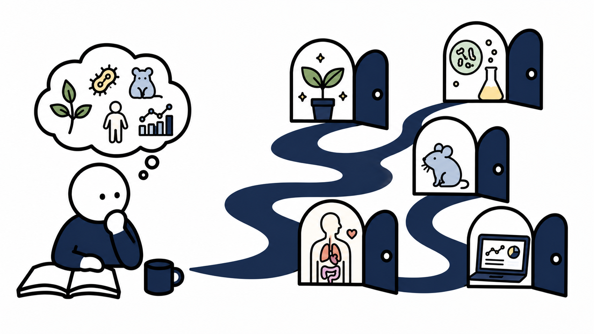

興味を選ぶ
まずは、動物・細胞・植物・環境など、今気になる言葉をひとつ選びます。

あなたの「好き」から、未来の研究室を見つけよう。
同じ「生命科学」分野でも、研究室によって、向き合う問いも使う手法も大きく違います。自分の興味に合う研究室はどれだろう？ 最初から研究室名を知っていなくても大丈夫。まずは、あなたが気になることから一緒に見ていきましょう。

ひとつの興味から、いくつもの扉へ。
研究室を知ることは、大学でできることを知ることです。
まずは、動物・細胞・植物・環境など、今気になる言葉をひとつ選びます。
選んだ興味に近い研究室が並びます。Questionを見比べると、研究の違いが見えてきます。
気になる研究室を開いたら、公式ページやWeb体験授業へ進んで、さらに深く知れます。
自分の興味にあう研究室をすぐに見られます。
気になるトピックをひとつ選ぶと、研究室データから自動で関連する研究室を表示します。
すべての研究室を表示しています。
動物園が好き、DNAが面白そう、医療に興味がある。ふだんの言葉を、My Labの研究キーワードへ翻訳して研究室との出会いを探します。
東洋大学生命科学部の研究室を掲載しています。
オープンキャンパスや文化祭では、研究室ごとに展示・実験プログラム・相談会などを行っています。気になる研究を見つけたら、ぜひ先生や学生に話を聞いてみてください。
イベント情報を表示しています。
あとで見返したい研究室を保存できます。オープンキャンパスや研究室見学の候補づくりにも使えます。